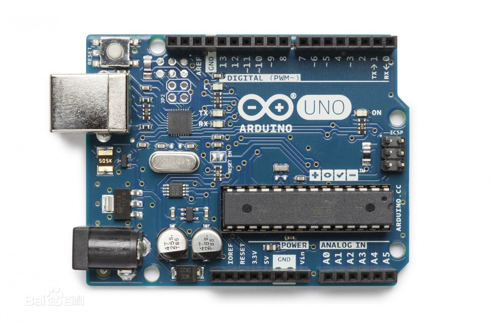

C语言
C语言是一门通用计算机编程语言，应用广泛。C语言的设计目标是提供一种能以简易的方式编译、处理低级存储器、产生少量的机器码以及不需要任何运行环境支持便能运行的编程语言。
尽管C语言提供了许多低级处理的功能，但仍然保持着良好跨平台的特性，以一个标准规格写出的C语言程序可在许多电脑平台上进行编译，甚至包含一些嵌入式处理器（单片机或称MCU）以及超级电脑等作业平台。
二十世纪八十年代，为了避免各开发厂商用的C语言语法产生差异，由美国国家标准局为C语言制定了一套完整的美国国家标准语法，称为ANSI C，作为C语言最初的标准。目前2011年12月8日，国际标准化组织（ISO）和国际电工委员会（IEC）发布的C11标准是C语言的第三个官方标准，也是C语言的最新标准，该标准更好的支持了汉字函数名和汉字标识符，一定程度上实现了汉字编程。
C语言是一门面向过程的计算机编程语言，与C++，Java等面向对象的编程语言有所不同。

C语言学习
这里推荐几个C语言入门学习的教程：
Arduino
Arduino是一款便捷灵活、方便上手的开源电子原型平台。包含硬件（各种型号的Arduino板）和软件（Arduino IDE)。由一个欧洲开发团队于2005年冬季开发。其成员包括Massimo Banzi、David Cuartielles、Tom Igoe、Gianluca Martino、David Mellis和Nicholas Zambetti等。
它构建于开放原始码simple I/O介面版，并且具有使用类似Java、C语言的Processing/Wiring开发环境。主要包含两个主要的部分：硬件部分是可以用来做电路连接的Arduino电路板；另外一个则是Arduino IDE，你的计算机中的程序开发环境。你只要在IDE中编写程序代码，将程序上传到Arduino电路板后，程序便会告诉Arduino电路板要做些什么了。
Arduino能通过各种各样的传感器来感知环境，通过控制灯光、马达和其他的装置来反馈、影响环境。板子上的微控制器可以通过Arduino的编程语言来编写程序，编译成二进制文件，烧录进微控制器。对Arduino的编程是通过 Arduino编程语言 (基于 Wiring)和Arduino开发环境(基于 Processing)来实现的。基于Arduino的项目，可以只包含Arduino，也可以包含Arduino和其他一些在PC上运行的软件，他们之间进行通信 (比如 Flash, Processing, MaxMSP)来实现。
